3. Apéndices
3.1. Creación de un proyecto web con Visual Studio.NET en Windows XP Home Edition
Visual Studio.NET le permite crear diferentes tipos de proyectos:

Para crear un proyecto de aplicación web, normalmente se selecciona el tipo [Aplicación web ASP.NET]. Este tipo de proyecto requiere un servidor web IIS local o remoto. Si está trabajando en un equipo con Windows XP, este servidor no existe y no se puede instalar. Por lo tanto, no puede crear un proyecto de [Aplicación web ASP.NET].
Puede solucionar esto aceptando algunos inconvenientes menores. Simplemente:
- utilice el servidor web Cassini en lugar del servidor IIS. Está disponible de forma gratuita en el sitio web de Microsoft.
- utiliza un proyecto [Biblioteca de clases] en lugar del proyecto [Aplicación web ASP.NET]
Creemos un proyecto sencillo para mostrar cómo hacerlo.
- Crea un proyecto [Biblioteca de clases]
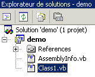 |  |
- Elimina [Class1.vb]

- Añade un nuevo elemento al proyecto, de tipo [Archivo de texto], y asígnale el nombre [demo.aspx]:
 |  |
- El archivo [demo.aspx] se reconoce como una página web y se le asigna un editor de páginas. Este editor tiene dos paneles:
- [Diseño] para crear la página gráficamente
- [HTML] para acceder al código HTML de la página

- Seleccione [Ver/Código] para mostrar la sección de código VB de la página. No ocurre nada. No se puede acceder al código VB de la página.
- Vaya al panel [HTML] e introduzca el código que vinculará la página [demo.aspx] con el código [demo.aspx.vb]:

- Solicite ver el código de control asociado a la página mediante [Ver código - F7]. Verá el archivo [demo.aspx.vb]:

- La página [demo.aspx] ahora se reconoce como una página web [.aspx] con un archivo [.aspx.vb] asociado.
- Vuelve al panel [Diseño] de [demo.aspx] y diseña la siguiente página:

La página contiene texto y un componente de servidor de tipo [Label] con el identificador [lblHeure].
- Cambie al panel [HTML]. Allí encontrará el siguiente código:
<%@ Page codebehind="demo.aspx.vb" inherits="demo.demo" autoeventwireup="false" Language="vb" %>
Démo ASPX, il est
<asp:Label id="lblHeure" runat="server"></asp:Label>
Este código está incompleto desde el punto de vista de la sintaxis HTML. Completémoslo:
<%@ Page codebehind="demo.aspx.vb" inherits="demo.demo" autoeventwireup="false" Language="vb" %>
<html>
<head>
<title>démo ASPX</title></head>
<body>
Démo ASPX, il est
<asp:Label id="lblHeure" runat="server"></asp:Label>
</body>
</html>
- Vamos al archivo [demo.aspx.vb] para escribir el código de control que establecerá la hora en el componente [lblHeure]. Observamos que IntelliSense, la herramienta de autocompletado de código, no lo reconoce.
- Cierra [demo.aspx] y [demo.aspx.vb] después de guardarlos y, a continuación, vuelve a abrirlos. Ve al código de [demo.aspx.vb]. Esta vez, IntelliSense reconoce el componente [lblHeure] de [demo.aspx] en el código [demo.aspx.vb]. Completa el código:

- Compile el proyecto seleccionando [Build/Build demo]. Si la compilación se realiza correctamente, se generará el archivo DLL en la carpeta [bin] del proyecto:

- Ya estamos listos para realizar las pruebas. Configuramos el servidor Cassini (véase el siguiente párrafo) de la siguiente manera:

El destino del acceso directo a Cassini se configura de la siguiente manera:
"E:\Program Files\Microsoft ASP.NET Web Matrix\v0.6.812\WebServer.exe" /path:"D:\temp\07-04-05\demo" /vpath:"/demo"
la ruta al ejecutable | |
la ruta a la carpeta del proyecto web de Visual Studio | |
la ruta virtual asociada |
- Inicie Cassini. Su icono aparecerá en la barra de tareas. Haga clic con el botón derecho del ratón sobre él y seleccione la opción [Mostrar detalles] para comprobar que el servidor web está configurado correctamente:

- Utilizando un navegador, acceda a la página que hemos creado introduciendo la URL [http://localhost/demo/demo.aspx]. Obtenemos el siguiente resultado:

Hemos creado con éxito una aplicación web en Visual Studio utilizando:
- un proyecto de [biblioteca de clases]
- el servidor web Cassini
Ahora sabemos cómo crear aplicaciones web en equipos que no tienen el servidor IIS, como los equipos con Windows XP Home Edition.
3.2. ¿Dónde se puede encontrar el servidor web Cassini?
Para trabajar con la plataforma .NET de Microsoft, puede utilizar el servidor web Cassini. Está disponible a través de un producto llamado [WebMatrix], que es un entorno de desarrollo web gratuito para plataformas .NET disponible en la URL:

Sigue atentamente los pasos de instalación del producto:
- descargue e instale la plataforma .NET (1.1 a fecha de marzo de 2004)
- descarga e instala WebMatrix
- Descargue e instale MSDE (Microsoft Data Engine), que es una versión limitada de SQL Server.
Una vez completada la instalación, el producto [WebMatrix] estará disponible en los programas instalados:

El enlace [ASP.NET] de Web Matrix abre el IDE de desarrollo de ASP.NET:

El enlace [Class Browser] abre una herramienta para explorar clases .NET:

Para comprobar la instalación, abramos [WebMatrix]:
 |
Al iniciarse por primera vez, [WebMatrix] le solicita las especificaciones del nuevo proyecto. Esta es su configuración predeterminada. Puede configurarlo para que este cuadro de diálogo no aparezca al iniciarse. A continuación, puede acceder a él a través de la opción [Archivo/Nuevo archivo]. [WebMatrix] te permite crear plantillas para diversas aplicaciones web. Arriba, en (1), especificamos que queríamos crear una aplicación [Página ASP.NET], que es una página web. En (2), especificamos la carpeta donde se ubicará esta página web. En (3), introducimos el nombre de la página. Debe tener la extensión .aspx. Por último, en (4), especificamos que queremos trabajar con el lenguaje VB.NET; [WebMatrix] también admite los lenguajes C# y J#. Una vez hecho esto, [WebMatrix] muestra una página de edición para el archivo [demo1.aspx]. Introducimos allí el siguiente código:

- La pestaña [Diseño] te permite «diseñar» la página web que deseas crear. Funciona de manera similar a un entorno de desarrollo integrado (IDE) para aplicaciones de Windows.
- El diseño gráfico de la página web en [Diseño] generará código HTML en la pestaña [HTML]
- La página web puede contener controles que generen eventos que requieran una respuesta, como un botón. Estos eventos serán gestionados por el código VB.NET colocado en la pestaña [Código]
- En definitiva, el archivo demo1.aspx es un archivo de texto que combina código HTML y código VB.NET, resultado del diseño gráfico creado en [Diseño], el código HTML añadido manualmente en [HTML] y el código VB.NET colocado en [Código]. El archivo completo está disponible en la pestaña [Todo].
- Un desarrollador experimentado de ASP.NET puede crear el archivo demo1.aspx directamente utilizando un editor de texto sin necesidad de ningún IDE.
Seleccionemos la opción [Todo]. Podemos ver que [WebMatrix] ya ha generado algo de código:
<%@ Page Language="VB" %>
<script runat="server">
' Insert page code here
'
</script>
<html>
<head>
</head>
<body>
<form runat="server">
<!-- Insert content here -->
</form>
</body>
</html>
No vamos a intentar explicar este código aquí. Lo transformaremos de la siguiente manera:
<html>
<head>
<title>Démo asp.net </title>
</head>
<body>
Il est <% =Date.Now.ToString("hh:mm:ss") %>
</body>
</html>
El código anterior es una mezcla de código HTML y VB.NET. Se ha colocado dentro de las etiquetas <% ... %>. Para ejecutar este código, utilizamos la opción [Ver/Iniciar]. A continuación, [WebMatrix] inicia el servidor web Cassini si aún no se está ejecutando

Puede aceptar los valores predeterminados que se ofrecen en este cuadro de diálogo y seleccionar la opción [Iniciar]. El servidor web quedará entonces activo. A continuación, [WebMatrix] iniciará el navegador predeterminado en el equipo en el que se está ejecutando y solicitará la URL http://localhost:8080/demo1.aspx:

Es posible utilizar el servidor Cassini fuera de [WebMatrix]. El ejecutable del servidor se encuentra en <WebMatrix>\<versión>\WebServer.exe, donde <WebMatrix> es el directorio de instalación de [WebMatrix] y <versión> es su número de versión:

Abre una ventana del símbolo del sistema y navega hasta la carpeta del servidor Cassini:
E:\Program Files\Microsoft ASP.NET Web Matrix\v0.6.812>dir
...
29/05/2003 11:00 53 248 WebServer.exe
...
Ejecutemos [WebServer.exe] sin ningún parámetro:
Aparece una ventana de ayuda:

La aplicación [WebServer], también conocida como el servidor web Cassini, admite tres parámetros:
- /port: número de puerto del servicio web. Puede ser cualquier número. El valor predeterminado es 80
- /path: la ruta física a una carpeta en el disco
- /vpath: la carpeta virtual asociada a la carpeta física anterior. Ten en cuenta que la sintaxis no es /path=path, sino /vpath:path, al contrario de lo que se indica en el [Ejemplo] del panel de ayuda anterior.
Colocamos el archivo [demo1.aspx] en la siguiente carpeta:

Asociemos la carpeta virtual [/webmatrix] con la carpeta física [d:\data\devel\webmatrix]. El servidor web se podría iniciar de la siguiente manera:
E:\Program Files\Microsoft ASP.NET Web Matrix\v0.6.812>webserver /port:100 /path:"d:\data\devel\webmatrix" /vpath:"/webmatrix"
El servidor Cassini ya está activo y su icono aparece en la barra de tareas. Si haces doble clic en él:

Verás la configuración de inicio del servidor. También tienes la opción de detener [Detener] o reiniciar [Reiniciar] el servidor web. Si haces clic en el enlace [URL raíz], se abrirá en el navegador la raíz del árbol de directorios web del servidor:

Siga el enlace [demos]:

y, a continuación, el enlace [demo1.aspx]:

Podemos ver que si la carpeta física P=[d:\data\devel\webmatrix] se ha asignado a la carpeta virtual V=[/webmatrix] y el servidor se está ejecutando en el puerto 100, la página web [demo1.aspx], que se encuentra físicamente en [P\demos], será accesible localmente a través de la URL [http://localhost:100/V/demos/demo1.aspx].
Para evitar tener que utilizar una ventana de DOS para iniciar el servidor Cassini, puede crear un acceso directo al ejecutable del servidor con propiedades similares a las siguientes:

"C:\Archivos de programa\Microsoft ASP.NET Web Matrix\v0.6.812\WebServer.exe" /port:80 /path:"D:\data\serge\work\2004-2005\aspnet\webarticles-010405\version3\web" /vpath:"/webarticles" | |
"C:\Archivos de programa\Microsoft ASP.NET Web Matrix\v0.6.812" |
3.3. ¿Dónde puedo encontrar Spring?
La página web principal de Spring es [http://www.springframework.org/]. Esta es la página de la versión para Java. La versión para .NET, actualmente en desarrollo (abril de 2005), está disponible en [http://www.springframework.net/].

El sitio de descargas se encuentra en [SourceForge]:

Una vez que hayas descargado el archivo zip anterior, descomprímelo:

En este documento, solo hemos utilizado el contenido de la carpeta [bin]:

En un proyecto de Visual Studio que utilice Spring, siempre debes hacer dos cosas:
- colocar los archivos anteriores en la carpeta [bin] del proyecto
- añadir una referencia al ensamblado [Spring.Core.dll] al proyecto
3.4. ¿Dónde se puede encontrar NUnit?
La página web principal de NUnit es [http://www.nunit.org/]. La versión disponible en abril de 2005 es la 2.2.0:

Descarga esta versión e instálala. La instalación crea una carpeta que contiene la interfaz gráfica de pruebas:
Lo interesante está en la carpeta [bin]:


La flecha de arriba señala la utilidad de pruebas gráficas. La instalación también ha añadido nuevos elementos al repositorio de ensamblados de Visual Studio, que vamos a explorar ahora.
Creemos el siguiente proyecto de Visual Studio:

La clase que se está probando se encuentra en [Person.vb]:
Public Class Personne
' private fields
Private _nom As String
Private _age As Integer
' default builder
Public Sub New()
End Sub
' properties associated with private fields
Public Property nom() As String
Get
Return _nom
End Get
Set(ByVal Value As String)
_nom = Value
End Set
End Property
Public Property age() As Integer
Get
Return _age
End Get
Set(ByVal Value As Integer)
_age = Value
End Set
End Property
' identity chain
Public Overrides Function tostring() As String
Return String.Format("[{0},{1}]", nom, age)
End Function
' init method
Public Sub init()
Console.WriteLine("init personne {0}", Me.ToString)
End Sub
' close method
Public Sub close()
Console.WriteLine("destroy personne {0}", Me.ToString)
End Sub
End Class
La clase de prueba se encuentra en [NunitTestPersonne-1.vb]:
Imports System
Imports NUnit.Framework
<TestFixture()> _
Public Class NunitTestPersonne
' object tested
Private personne1 As Personne
<SetUp()> _
Public Sub init()
' create an instance of Person
personne1 = New Personne
' log
Console.WriteLine("setup test")
End Sub
<Test()> _
Public Sub demo()
' log screen
Console.WriteLine("début test")
' init person1
With personne1
.nom = "paul"
.age = 10
End With
' tests
Assert.AreEqual("paul", personne1.nom)
Assert.AreEqual(10, personne1.age)
' log screen
Console.WriteLine("fin test")
End Sub
<TearDown()> _
Public Sub destroy()
' follow-up
Console.WriteLine("teardown test")
End Sub
End Class
Varias cosas a tener en cuenta:
- a los métodos se les asignan atributos como <Setup()>, <TearDown()>, ...
- Para que estos atributos sean reconocidos, debe cumplirse lo siguiente:
- el proyecto hace referencia al ensamblado [nunit.framework.dll]
- la clase de prueba importa el espacio de nombres [NUnit.Framework]
La referencia se añade haciendo clic con el botón derecho del ratón en [Referencias] en el Explorador de soluciones:
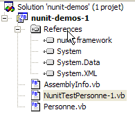 |  |

El ensamblado [nunit.framework.dll] debería aparecer en la lista si la instalación de [NUnit] se ha realizado correctamente. Basta con hacer doble clic en el ensamblado para añadirlo al proyecto:

Una vez hecho esto, la clase de prueba [NunitTestPersonne] debe importar el espacio de nombres [NUnit.Framework]:
A continuación, se deben reconocer los atributos de la clase de prueba [NunitTestPersonne].
- El atributo <Test()> designa un método que se va a probar
- El atributo <Setup()> designa el método que se ejecutará antes de cada método que se va a probar
- El atributo <TearDown()> designa el método que se ejecutará después de cada método que se esté probando
- El método Assert.AreEqual permite comprobar la igualdad entre dos entidades. Existen muchos otros métodos del tipo Assert.xx.
- La utilidad NUnit detiene la ejecución de un método probado tan pronto como falla un método [Assert] y muestra un mensaje de error. De lo contrario, muestra un mensaje de éxito.
Configuremos nuestro proyecto para generar una DLL:

La DLL generada se llamará [nunit-demos-1.dll] y se colocará por defecto en la carpeta [bin] del proyecto. Compilemos nuestro proyecto. Obtendremos lo siguiente en la carpeta [bin]:

Ahora ejecutemos la utilidad gráfica de pruebas de NUnit. Recuerda que se encuentra en <Nunit>\bin y se llama [nunit-gui.exe]. <Nunit> hace referencia a la carpeta de instalación [Nunit]. Aparecerá la siguiente interfaz:
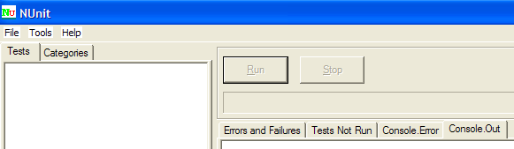
Utilicemos la opción de menú [Archivo/Abrir] para cargar el archivo DLL [nunit-demos-1.dll] de nuestro proyecto:

[Nunit] puede detectar automáticamente las clases de prueba contenidas en el archivo DLL cargado. En este caso, encuentra la clase [NunitTestPersonne]. A continuación, muestra todos los métodos de la clase que tienen el atributo <Test()>. El botón [Ejecutar] te permite ejecutar las pruebas en el objeto seleccionado. Si se trata de la clase [NunitTestPersonne], se prueban todos los métodos mostrados. Puedes probar un método específico seleccionándolo y haciendo clic en [Run]. Ejecutemos la clase:
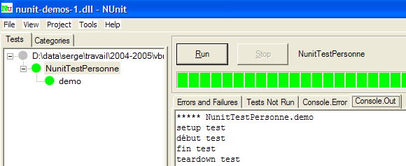
Una prueba superada en un método se indica con un punto verde junto al método en la ventana de la izquierda. Una prueba fallida se indica con un punto rojo.
La ventana [Console.Out] de la derecha muestra la salida en pantalla generada por los métodos probados. Aquí, queríamos seguir el progreso de una prueba:
- La línea 1 muestra que el método del atributo <Setup()> se ejecuta antes de la prueba
- Las líneas 2 y 3 son generadas por el método [demo] que se está probando (véase el código anterior)
- La línea 4 muestra que el método del atributo <TearDown()> se ejecuta después de la prueba
3.5. ¿Dónde puedo encontrar el SGBD Firebird ?
La página web principal de Firebird es [http://firebird.sourceforge.net/]. La página de descargas ofrece los siguientes enlaces (abril de 2005):

Descargará los siguientes elementos:
el SGBD para Windows | |
una biblioteca de clases para aplicaciones .NET que permite acceder al SGBD sin necesidad de utilizar un controlador ODBC. | |
el controlador ODBC de Firebird |
Instala estos componentes. El SGBD se instala en una carpeta con un contenido similar al siguiente:

Los archivos binarios se encuentran en la carpeta [bin]:
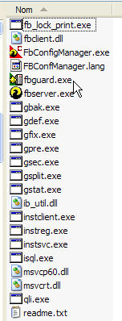
te permite iniciar/detener el SGBD | |
cliente de línea de comandos para la gestión de bases de datos |
Tenga en cuenta que, de forma predeterminada, el administrador del SGBD se llama [SYSDBA] y la contraseña es [masterkey]. Se han añadido menús a [Inicio]:
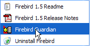
La opción [Firebird Guardian] le permite iniciar/detener el SGBD. Tras el inicio, el icono del SGBD permanece en la barra de tareas de Windows:
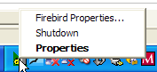 |
Para crear y gestionar bases de datos Firebird utilizando el cliente de línea de comandos [isql.exe], debe leer la documentación incluida con el producto en la carpeta [doc]. Una forma más rápida de trabajar con Firebird es utilizar un cliente gráfico. Uno de estos clientes es IB-Expert, que se describe en la siguiente sección.
3.6. ¿Dónde puedo encontrar IB- Expert?
La página web principal de Firebird es [http://www.ibexpert.com/]. La página de descargas ofrece los siguientes enlaces:

Seleccione la versión gratuita [Personal Edition]. Una vez descargada e instalada, dispondrá de una carpeta similar a la siguiente:

El archivo ejecutable es [ibexpert.exe]. Normalmente hay un acceso directo disponible en el menú [Inicio]:

Una vez iniciado, IBExpert muestra la siguiente ventana:

Utilice la opción [Base de datos/Crear base de datos] para crear una base de datos:
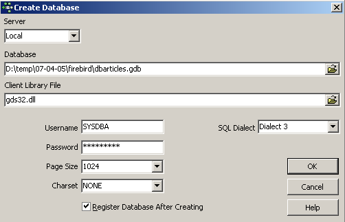
puede ser [local] o [remota]. En este caso, nuestro servidor se encuentra en la misma máquina que [IBExpert]. Por lo tanto, elegimos [local] | |
Utilice el botón [carpeta] del menú desplegable para seleccionar el archivo de la base de datos. Firebird almacena toda la base de datos en un único archivo. Esta es una de sus ventajas. Puede transferir la base de datos de un ordenador a otro simplemente copiando el archivo. El sufijo [.gdb] se añade automáticamente. | |
SYSDBA es el administrador predeterminado en las distribuciones actuales de Firebird | |
masterkey es la contraseña del administrador SYSDBA en las distribuciones actuales de Firebird | |
el dialecto SQL que se va a utilizar | |
Si se marca esta casilla, IBExpert mostrará un enlace a la base de datos una vez que se haya creado |
Si, al hacer clic en el botón [Aceptar] para crear la base de datos, aparece la siguiente advertencia:

significa que no ha iniciado Firebird. Inícielo. Aparecerá una nueva ventana:

[IBExpert] puede gestionar varios sistemas de gestión de bases de datos (DBMS) derivados de Interbase. Selecciona la versión de Firebird que tengas instalada |

Una vez que haya confirmado esta nueva ventana haciendo clic en [Registrar], verá el siguiente resultado:

Para acceder a la base de datos creada, basta con hacer doble clic en su enlace. IBExpert mostrará entonces una vista en árbol que permite acceder a las propiedades de la base de datos:

Creemos una tabla. Haga clic con el botón derecho del ratón en [Tablas] y seleccione la opción [Nueva tabla]. Aparecerá la ventana de definición de propiedades de la tabla:
 |
Empecemos por nombrar la tabla [ARTÍCULOS] utilizando el campo de entrada [1]:
 |
Utiliza el campo de entrada [2] para definir una clave principal [ID]:
 |
Para convertir un campo en clave principal, haz doble clic en el campo [PK] (Clave principal). Añadamos campos utilizando el botón [3]:

Hasta que no hayamos «compilado» nuestra definición, la tabla no se creará. Utilice el botón [Compilar] situado arriba para finalizar la definición de la tabla. IBExpert prepara las consultas SQL para generar la tabla y solicita confirmación:

Curiosamente, IBExpert muestra las consultas SQL que ha ejecutado. Esto le permite aprender tanto el lenguaje SQL como cualquier dialecto SQL propio que pueda utilizarse. El botón [Confirmar] valida la transacción actual, mientras que [Deshacer] la cancela. En este caso, la aceptamos haciendo clic en [Confirmar]. Una vez hecho esto, IBExpert añade la tabla creada a nuestro árbol de bases de datos:

Al hacer doble clic en la tabla, podemos acceder a sus propiedades:

El panel [Constraints] nos permite añadir nuevas restricciones de integridad a la tabla. Abrámoslo:

Vemos la restricción de clave principal que hemos creado. Podemos añadir otras restricciones:
- claves externas [Foreign Keys]
- restricciones de integridad de campo [Checks]
- restricciones de unicidad de campo [Uniques]
Ten en cuenta que:
- los campos [ID, PRICE, CURRENTSTOCK, MINIMUMSTOCK] deben ser >0
- el campo [NAME] debe estar rellenado y ser único
Abra el panel [Comprobaciones] y haga clic con el botón derecho del ratón en el área de definición de restricciones para añadir una nueva restricción:

Definamos las restricciones deseadas:

Observe que la restricción [NAME<>''] utiliza dos comillas simples, no comillas dobles. Compile estas restricciones utilizando el botón [Compilar] situado arriba:

Una vez más, IBExpert demuestra su facilidad de uso mostrando las consultas SQL que ha ejecutado. Ahora pasemos al panel [Constraints/Unique] para especificar que el nombre debe ser único:

Definamos la restricción:

Compilémosla. Una vez hecho esto, abra el panel [DDL] de la tabla [ARTICLES]:
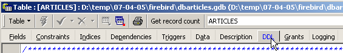
Este panel muestra el código SQL para generar la tabla con todas sus restricciones. Puedes guardar este código en un script para ejecutarlo más tarde:
SET SQL DIALECT 3;
SET NAMES NONE;
CREATE TABLE ARTICLES (
ID INTEGER NOT NULL,
NOM VARCHAR(20) NOT NULL,
PRIX DOUBLE PRECISION NOT NULL,
STOCKACTUEL INTEGER NOT NULL,
STOCKMINIMUM INTEGER NOT NULL
);
ALTER TABLE ARTICLES ADD CONSTRAINT CHK_ID check (ID>0);
ALTER TABLE ARTICLES ADD CONSTRAINT CHK_PRIX check (PRIX>0);
ALTER TABLE ARTICLES ADD CONSTRAINT CHK_STOCKACTUEL check (STOCKACTUEL>0);
ALTER TABLE ARTICLES ADD CONSTRAINT CHK_STOCKMINIMUM check (STOCKMINIMUM>0);
ALTER TABLE ARTICLES ADD CONSTRAINT CHK_NOM check (NOM<>'');
ALTER TABLE ARTICLES ADD CONSTRAINT UNQ_NOM UNIQUE (NOM);
ALTER TABLE ARTICLES ADD CONSTRAINT PK_ARTICLES PRIMARY KEY (ID);
Ahora es el momento de introducir datos en la tabla [ARTICLES]. Para ello, utilice su panel [Datos]:

Los datos se introducen haciendo doble clic en los campos de entrada de cada fila de la tabla. Se añade una nueva fila con el botón [+] y se elimina una fila con el botón [-]. Estas operaciones se realizan dentro de una transacción que se confirma con el botón [Confirmar transacción]. Sin esta confirmación, los datos se perderán.
IBExpert le permite ejecutar consultas SQL a través de la opción [Herramientas/Editor SQL] o [F12]. Esto le da acceso a un editor avanzado de consultas SQL donde puede ejecutar consultas. Estas se guardan, por lo que puede volver a consultar una consulta que ya haya ejecutado. He aquí un ejemplo:

Ejecutamos la consulta SQL utilizando el botón [Execute] situado arriba. Obtenemos el siguiente resultado:

Terminaremos aquí nuestras demostraciones. La combinación de IBExpert y Firebird resulta excelente para aprender sobre bases de datos.
3.7. Instalación y uso de un controlador ODBC para [Firebird]
3.8. Instalación del controlador
El enlace [firebird-odbc-provider] de la página de descargas de [Firebird] (sección 3.5) permite acceder a un controlador ODBC. Una vez instalado, aparecerá en la lista de controladores ODBC instalados.
3.9. Crear un origen de datos ODBC
- Inicie la herramienta [Inicio -> Configuración -> Herramientas de configuración -> Herramientas administrativas -> Orígenes de datos ODBC]:

- Aparecerá la siguiente ventana:

- Haga clic en [Añadir] para añadir un nuevo origen de datos del sistema (en el panel [DSN del sistema]) que asociaremos a la base de datos Firebird que creamos en la sección anterior:

- En primer lugar, debemos especificar el controlador ODBC que se va a utilizar. Arriba, seleccionamos el controlador para Firebird y, a continuación, hacemos clic en [Finalizar]. A continuación, el asistente del controlador ODBC de Firebird se encarga del resto:

- Rellenamos los distintos campos:

el nombre DSN de la fuente ODBC; puede ser cualquiera | |
el nombre de la base de datos Firebird que se va a utilizar; utilice [Examinar] para seleccionar el archivo .gbd correspondiente | |
el nombre de usuario que se utilizará para conectarse a la base de datos | |
la contraseña asociada a este nombre de usuario |
El botón [Probar conexión] te permite verificar la validez de la información que has introducido. Antes de utilizarlo, inicia el SGBD [Firebird]:

- Confirme el asistente ODBC haciendo clic en [Aceptar] tantas veces como sea necesario
3.10. Prueba el origen ODBC
Hay varias formas de comprobar que una fuente ODBC funciona correctamente. En este caso, utilizaremos Excel:

- Utilice la opción [Datos -> Datos externos -> Crear consulta] que aparece arriba. Esto abre la primera ventana del asistente de definición de origen de datos. El panel [Bases de datos] muestra las fuentes ODBC definidas actualmente en el equipo:

- Seleccione el origen ODBC [odbc-firebird-articles] que acabamos de crear y continúe con el siguiente paso haciendo clic en [Aceptar]:

- Esta ventana muestra las tablas y columnas disponibles en la fuente ODBC. Seleccionaremos toda la tabla:

- Continúe con el siguiente paso haciendo clic en [Siguiente]:

- Este paso nos permite filtrar los datos. En este caso, no filtraremos nada y pasaremos al siguiente paso:

- Este paso nos permite ordenar los datos. No lo haremos y pasaremos al siguiente paso:

- El último paso nos pregunta qué queremos hacer con los datos. Aquí, los exportamos a Excel:

- Aquí, Excel nos pregunta dónde queremos colocar los datos recuperados. Los colocamos en la hoja activa, empezando por la celda A1. A continuación, los datos se recuperan en la hoja de Excel:

Hay otras formas de comprobar la validez de una fuente ODBC. Por ejemplo, puedes utilizar la suite gratuita OpenOffice, disponible en [http://www.openoffice.org]. A continuación se muestra un ejemplo con OpenOffice:
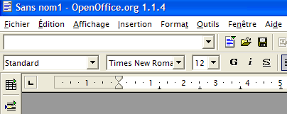 |  |
- Un icono situado en la parte izquierda de la ventana de OpenOffice permite acceder a las fuentes de datos. A continuación, la interfaz cambia para mostrar un área de gestión de fuentes de datos:

- Hay una fuente de datos predefinida: la fuente [Bibliografía]. Al hacer clic con el botón derecho del ratón en el área de fuentes de datos, se puede crear una nueva mediante la opción [Gestionar fuentes de datos]:

- Un asistente de [Gestión de fuentes de datos] le permite crear fuentes de datos. Al hacer clic con el botón derecho del ratón en el área de fuentes de datos, puede crear una nueva utilizando la opción [Nueva fuente de datos]:

Cualquier nombre. Aquí hemos utilizado el nombre de la fuente ODBC | |
OpenOffice admite varios tipos de bases de datos a través de JDBC, ODBC o directamente (MySQL, Dbase, etc.). Para nuestro ejemplo, seleccione ODBC | |
El botón situado a la derecha del campo de entrada nos permite acceder a la lista de fuentes ODBC del equipo. Seleccionamos la fuente [odbc-firebird-articles] |
- Nos desplazamos al panel [ODBC] para definir el usuario con cuyas credenciales se realizará la conexión:

El propietario de la fuente ODBC |
- Vaya al panel [Tablas]. Se le pedirá la contraseña. En este caso, es [masterkey]:

- Haga clic en [Aceptar]. A continuación, se mostrará la lista de tablas de la fuente ODBC:
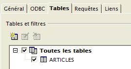
- Puede seleccionar las tablas que se mostrarán en el documento de [OpenOffice]. En este caso, seleccionamos la tabla [ARTICLES] y hacemos clic en [Aceptar]. La definición de la fuente de datos ha finalizado. A continuación, aparecerá en la lista de fuentes de datos del documento activo:

- Puede arrastrar la tabla [ARTICLES] desde arriba al documento de [OpenOffice] con el ratón:
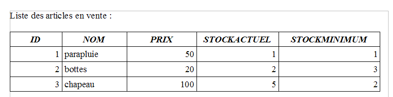
3.11. Cadena de conexión para una fuente ODBC de Firebird
- Inicie Visual Studio y abra el Explorador de servidores [Ver/Explorador de servidores]:
 |
- Haga clic con el botón derecho en [Conexión de datos] y seleccione la opción [Añadir conexión]:
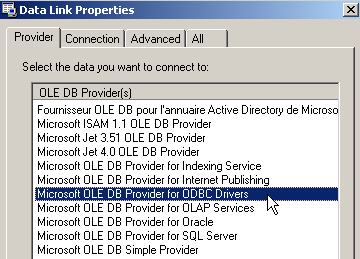
- En el panel [Proveedor], especifique que desea utilizar una fuente ODBC (véase más arriba) y, a continuación, cambie al panel [Conexión]:

Seleccione el origen ODBC en el menú desplegable. Debería aparecer el que acaba de crear. Si es necesario, utilice [Actualizar] para actualizar la lista de orígenes ODBC. | |
nombre de usuario que se utilizará para conectarse a la base de datos | |
La contraseña asociada a este nombre de usuario |
Aquí también, el botón [Probar conexión] te permite verificar la validez de la información:

- Confirme el asistente haciendo clic en [Aceptar]. A continuación, el origen de datos aparecerá en la ventana [Explorador de servidores] de Visual Studio:

- Al hacer doble clic en la tabla [ARTICLES], puede acceder a los datos de la tabla:

- Si hacemos clic con el botón derecho del ratón en el enlace [Firebird Server D:\temp\... ] y seleccionamos la opción [Propiedades], podemos acceder a las propiedades de la conexión:

- La [Cadena de conexión] es una propiedad importante que hay que conocer, ya que el código .NET la necesita para establecer una conexión con la base de datos. En este caso, la cadena de conexión es:
Provider=MSDASQL.1;Persist Security Info=False;User ID=SYSDBA;Data Source=demo-odbc-firebird;Extended Properties="DSN=demo-odbc-firebird;Driver=Firebird/InterBase(r) driver;Dbname=D:\temp\07-04-05\firebird\DBARTICLES.GDB;CHARSET=NONE;UID=SYSDBA"
Muchos elementos de esta cadena de conexión tienen valores predeterminados. La siguiente cadena de conexión será suficiente:
Con esto concluye nuestra descripción general del controlador ODBC de [Firebird].
3.12. ¿Dónde se puede encontrar el MSDE ?
MSDE es la versión gratuita del sistema de gestión de bases de datos SQL Server de Microsoft. Se puede encontrar en la URL [http://www.microsoft.com/sql/msde/downloads/download.asp]:
 |
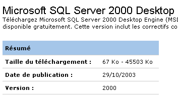 |  |
Descarga el archivo de instalación y, a continuación, instala el SGBD haciendo doble clic en el ejecutable descargado. Aparecerá una ventana en la que se te pedirá la carpeta de instalación. El título es engañoso. Se trata de una carpeta temporal que se puede eliminar más tarde:
 |  |
Lea atentamente el archivo [ReadmeMSDE2000A.htm]. El instalador es [setup.exe], mencionado anteriormente. Se ejecuta desde la línea de comandos, por lo que puede pasarle parámetros. Los principales son los siguientes:
Descripción | |
| Especifica una contraseña segura que se asignará al inicio de sesión del administrador «sa». |
| Define el nombre de la instancia. Si no se especifica INSTANCENAME, el instalador instala una instancia predeterminada. |
Otros parámetros que se utilizan a menudo para personalizar una instalación son:
Descripción | |
Especifica si la instancia aceptará conexiones de red de aplicaciones que se ejecutan en otros equipos. De forma predeterminada, o si se especifica DISABLENETWORKPROTOCOLS=1, el instalador configura la instancia para que rechace las conexiones de red. Especifique DISABLENETWORKPROTOCOLS=0 para habilitar las conexiones de red. | |
Especifica que la instancia debe instalarse en modo mixto, lo que significa que la instancia admite tanto la autenticación de Windows como la autenticación SQL para las conexiones | |
| Especifica la carpeta en la que el instalador instala las bases de datos del sistema, los registros de errores y los scripts de instalación. El valor especificado para data_folder_path debe terminar con una barra invertida (\). Para una instancia predeterminada, el instalador añade MSSQL\ al valor especificado. En el caso de una instancia con nombre, el instalador añade MSSQL$InstanceName\, donde InstanceName es el valor especificado mediante el parámetro INSTANCENAME. El instalador crea tres carpetas en la ubicación especificada: una carpeta Data, una carpeta Log y una carpeta Script. |
| Especifica la carpeta en la que el instalador instala los archivos ejecutables de MSDE 2000. El valor especificado para ejecutable_ruta_carpeta debe terminar con una barra invertida (\). Para una instancia predeterminada, el instalador añade MSSQL\Binn al valor especificado. Para una instancia con nombre, el instalador añade MSSQL$InstanceName\Binn, donde InstanceName es el valor especificado mediante el parámetro INSTANCENAME. |
Después de leer las recomendaciones de instalación anteriores, vaya a la carpeta donde se extrajeron los archivos de instalación e introduzca el siguiente comando DOS (utilizando el SGBD sin red):
- INSTANCENAME="MSDE140405": este será el nombre de nuestra instancia de MSDE. Se pueden instalar varias instancias.
- SECURITYMODE=SQL: el DBMS se ejecutará en modo de autenticación mixta. Esto le permite conectarse a MSDE de dos maneras:
- con una cuenta de administrador de Windows
- con una cuenta de MSDE; en este caso, se requieren un nombre de usuario y una contraseña. Este es el modo que se debe utilizar en un programa que se conecte a una base de datos.
- SAPWD="azerty" - esta será la contraseña del usuario [sa] del DBMS. El usuario [sa] tiene derechos de administrador en el DBMS.
Para utilizar el SGBD en una red, debe ejecutar el siguiente comando:
El programa de instalación es muy sencillo y se completa sin mostrar ningún mensaje... Sin embargo, puede comprobar que el SGBD se ha instalado a través de la opción [Menú Inicio -> Panel de control -> Agregar o quitar programas]:

La instalación se realiza normalmente en C:\Archivos de programa\Microsoft SQL Server\MSSQL$instanceName:
 |  |
En la carpeta [LOG] del directorio de instalación encontrarás el archivo de registro correspondiente a la fase de instalación del SGBD. Este contiene una información importante: el nombre de la instancia de MSDE:
Es importante conocer este nombre porque todos los clientes del SGBD lo necesitarán. Si faltan estos registros, puede encontrar el nombre de un servidor MSDE, que es [nombre_del_equipo_Windows\nombre_de_la_instancia_MSDE]. El nombre del equipo está disponible en varios lugares. Por ejemplo:
- Haga clic con el botón derecho en [Mi PC] en el escritorio, seleccione [Propiedades] y, a continuación, la pestaña [Nombre del equipo]:

Todavía no sabemos cómo iniciar el servidor MSDE. Normalmente hay un acceso directo en [Inicio/Inicio].

Si miras las propiedades de este acceso directo, verás que el destino es el siguiente:
En la carpeta [C:\Archivos de programa\Microsoft SQL Server] hay subcarpetas:

- MSSQL$MSDE140405 es la carpeta de la instancia de MSDE que acabamos de instalar.
- MSSQL es la carpeta de una instancia MSDE anterior. Como no tiene nombre, la llamamos la instancia predeterminada.
- La carpeta [80] es una carpeta compartida para las distintas instancias de MSDE instaladas. El destino [sqlmangr.exe] del acceso directo que inicia una instancia de MSDE se encuentra en la carpeta [80\Tools\Binn].
Iniciemos MSDE mediante el acceso directo en [Inicio -> Programas -> Inicio]. No ocurre prácticamente nada, salvo que aparece un icono en la barra de tareas: | Haga doble clic en este icono:  |
El servidor MSDE que se muestra aquí es el servidor predeterminado [PORTABLE1_TAHE] en el equipo. Recuerda que el servidor MSDE que hemos instalado se llama [PORTABLE1_TAHE\MSDE140405]. Cambiamos el nombre del servidor en el campo correspondiente:  | Si todo va bien, debería iniciarse la instancia [MSDE140405]: 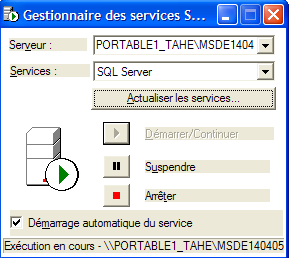 |
Podemos realizar una comprobación inicial. En la misma carpeta que [sqlmangr.exe], hay un cliente de consola [osql.exe] que permite conectarse a un servidor MSDE y ejecutar comandos SQL. Durante la instalación, asignamos la contraseña [azerty] al administrador [sa] de nuestro servidor MSDE. Mediante el cliente de consola, nos conectaremos al servidor recién instalado. Si ejecutamos el comando [osql -?], se muestra la lista de parámetros posibles:
C:\Program Files\Microsoft SQL Server\80\Tools\Binn>osql -?
utilisation : osql
[-U ID de connexion]
[-P mot de passe]
[-S serveur]
[-H nom de l'host]
[-E connexion approuvée]
[-d utiliser le nom de la base de données]
[-l limite du temps de connexion]
[-t limite du temps de requête]
[-h en-têtes]
[-s séparateur de colonnes]
[-w largeur de colonne]
[-a taille du paquet]
[-e entrée d'echo]
[-I Activer les identificateurs marqués]
[-L liste des serveurs]
[-c fin de cmd] [-D nom ODBC DSN]
[-q "requête cmdline"]
[-Q "requête cmdline" et quitter]
[-n supprimer la numérotation]
[-m niveau d'error]
[-r msgs vers stderr]
[-V severitylevel]
[-i fichier d'entry]
[-o fichier de sortie]
[-p imprimer les statistiques] [-b abandon du lot d'instruction after error]
[-X[1] désactive les commandes [et quitte avec un avertissement]]
[-O utiliser le comportement Old ISQL désactive les éléments suivants]
<EOF> traitement par lot d'instructions
Mise à l'automatic console width scaling
Messages larges
niveau d'default error -1 instead of 1
[-? description de la syntaxe]
Inicie el servidor [MSDE140405] tal y como se ha descrito anteriormente; a continuación, en una ventana de símbolo del sistema, utilice [osql] para conectarse al servidor [portable1_tahe\msde140405] con la identidad [sa, azerty]:
C:\Program Files\Microsoft SQL Server\80\Tools\Binn>OSQL.EXE -U sa -S portable1_tahe\msde140405 -P azerty
1>
El indicador [1>] indica que [osql] está esperando un comando. Nos hemos conectado correctamente. Para utilizar [osql] correctamente, debe consultar la documentación de MSDE. Está disponible en varios formatos (PDF, Ayuda HTML, etc.). Esta documentación es bastante extensa. Por lo general, es preferible utilizar un cliente gráfico para trabajar con una base de datos MSDE. Esto es lo que se sugiere un poco más adelante. Para salir de [osql], utilice el comando [exit]:
Ahora veremos cómo crear bases de datos en el servidor MSDE recién instalado. Antes de eso, presentaremos brevemente una herramienta llamada [MSDE Manager] que permite cambiar el modo de autenticación de un servidor MSDE. De hecho, si se instala dicho servidor utilizando las opciones de instalación predeterminadas, el modo de autenticación del servidor se establece en [Autenticación de Windows]. Este tipo de autenticación solo permite a los usuarios identificados en el equipo Windows (posiblemente a través de un dominio). Para un programa VB.NET que quiera conectarse a una base de datos para utilizar su contenido, este modo resulta poco práctico. Es aún peor para las aplicaciones Java que acceden al SGBD a través de un controlador JDBC. En tales casos, es preferible la autenticación mixta, ya que acepta pares de nombre de usuario/contraseña definidos en el SGBD además del método de autenticación anterior. La herramienta [MSDE Manager] permite realizar esta operación.
3.13. ¿Dónde puedo encontrar MSDE Manager?
[MSDE Manager] es una herramienta de administración para el SGBD MSDE. Se puede encontrar en la URL [http://www.valesoftware.com/].
Descargamos la versión gratuita siguiendo el enlace anterior:


La versión de prueba tiene una duración limitada. Esto no supone ningún problema, ya que solo la utilizaremos para una única tarea específica. Descargue e instale el producto. Se creará un acceso directo en el escritorio. Utilícelo para iniciar MSDE Manager. Tras las ventanas iniciales, llegará a esta:

- Inicie el servidor MSDE140405
- Debe haber iniciado sesión en el equipo Windows como administrador
- Haz clic con el botón derecho del ratón en el enlace [SQL Server Group] y selecciona la opción [New SQL Server Registration]:


Aparecerá la siguiente página de propiedades:
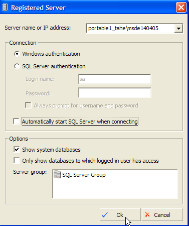 |
portable1_tahe\msde140405 - nombre de la instancia de MSDE a la que desea conectarse | |
Autenticación de Windows: este modo siempre está disponible y permite que un administrador de un equipo Windows se conecte al servidor MSDE | |
Seleccione el único grupo de servidores que aparece en la lista [Grupo de servidores SQL] |
Una vez que se hace clic en [Aceptar], se muestra el árbol de propiedades del servidor MSDE140405:

Podríamos empezar a crear bases de datos. No lo haremos porque vamos a utilizar otro producto, un clon del producto de IBExpert que ya hemos visto. Simplemente cambiaremos el modo de autenticación de MSDE. Haga clic con el botón derecho del ratón en el servidor MSDE140405 anterior y seleccione la opción [Diseño]:

Aparece la siguiente ventana de información:

La pestaña [General] proporciona información sobre el servidor MSDE al que estás conectado. La página [Seguridad] es la que nos interesa:

Aquí, debe asegurarse de que el modo de autenticación de MSDE esté configurado en [SQL Server y Windows]. Esto le permitirá conectarse a MSDE de dos maneras:
- con una cuenta de administrador de Windows, que es lo que se ha hecho aquí
- con una cuenta de MSDE; en ese caso, se requerirá un nombre de usuario y una contraseña. Este es el modo que se debe utilizar en un programa que se conecte a una base de datos DBMS.
Confirmamos esta selección y salimos del Administrador de MSDE. Ya no lo necesitaremos. Para crear bases de datos MSDE, utilizaremos otra herramienta: EMS MS SQL Manager.
3.14. ¿Dónde se puede encontrar EMS MS SQL Manager?
EMS MS SQL Manager es una herramienta gráfica para trabajar con el sistema de gestión de bases de datos Microsoft SQL Server y, por lo tanto, con MSDE. Es muy similar a la herramienta IB-Expert descrita anteriormente. Está disponible en la URL [http://sqlmanager.net/] (abril de 2005):

El sitio ofrece herramientas de administración para muchos sistemas de gestión de bases de datos. Siga el enlace [MS SQL Manager]:

Arriba, seleccionamos la versión ligera del producto. Descárgala e instálala. Tendrás una carpeta similar a la siguiente:
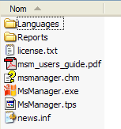
El ejecutable es [MsManager.exe]. Normalmente hay un acceso directo disponible en el menú [Inicio]:

Una vez iniciado, MS SQL Manager muestra la siguiente ventana:
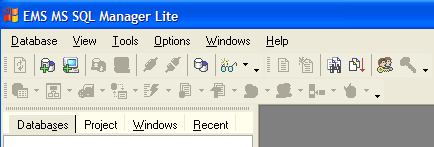
Empecemos por registrar el servidor MSDE con el que queremos trabajar utilizando la opción [Base de datos/Registrar host]:
 |
Comentarios:
- Paso 1: como se ha mencionado, MSDE admite dos modos de autenticación: Windows y SQL Server. En el modo [Windows], se utilizan las cuentas del equipo Windows. En el modo [SQL Server], se utilizan las cuentas del SGBD. [SQL Server] puede funcionar en modo [Windows] o en modo mixto [Windows, SQL Server]. El modo de autenticación [Windows] siempre está disponible. Sin embargo, el modo de autenticación mixto no siempre está activo. Hemos visto cómo habilitarlo mediante el Administrador de MSDE. Arriba, la conexión se realizó utilizando una cuenta de administrador.
- Paso 2: una vez completada la autenticación, se muestran las bases de datos MSDE predeterminadas. Arriba, se seleccionaron todas ellas.
 |
Comentarios:
- Paso 3: Se pueden seleccionar las opciones de administración para las bases de datos seleccionadas. En este caso, se mantuvieron las opciones predeterminadas.
- Paso 4: Registramos el servidor MSDE mediante el botón [Registrar]
A continuación, el servidor MSDE aparece en el explorador de bases de datos:
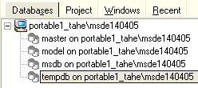
Utilicemos la opción [Base de datos/Crear base de datos] para crear una base de datos:
 |
Paso 2:
Cuando aparezca esta página de información, la base de datos [dbarticles] se habrá creado. Puede verificarlo haciendo clic en el botón [Probar conexión]. En el campo [Alias de la base de datos], puede introducir lo que desee. En este caso, hemos introducido:
- el nombre de la base de datos
- el nombre del servidor MSDE en el que se encuentra
- el usuario [admarticles] que será el propietario de esta base de datos y su contraseña [mdparticles]. Este usuario aún no se ha creado, pero se creará en breve.
Paso 3:
- Haga clic en el botón [Registrar] para registrar la nueva base de datos en [MS SQL Server]. Tras el registro, la base de datos [admarticles] aparecerá en la lista de bases de datos. Al hacer doble clic sobre ella, se mostrará su árbol de propiedades.
 |  |
Creemos un nuevo usuario que será el administrador de la base de datos [admarticles].
- Selecciona la opción [Herramientas/Gestor de usuarios]:

- Podemos ver que ya hay dos cuentas de usuario definidas:
- [BUILTIN\Administrators]: Esta cuenta utiliza la autenticación de Windows. Representa a los administradores del equipo Windows en el que se encuentra el servidor MSDE
- sa: Este inicio de sesión utiliza la autenticación SQL. De forma predeterminada, es el administrador del servidor MSDE. Tenga en cuenta que aquí, tal y como se configuró durante la instalación del SGBD MSDE, su contraseña es [azerty].
- Haga clic con el botón derecho del ratón en el área de inicios de sesión y añada un nuevo inicio de sesión:
 |
- Aparecerá un formulario en el que definiremos las características del nuevo inicio de sesión:
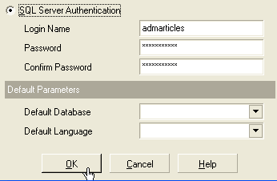
- Nombre de usuario: admarticles
- Contraseña: mdparticles
- Una vez que se hace clic en el botón [Aceptar], MS Manager muestra las consultas SQL que ejecutará:

El lenguaje SQL que se muestra arriba es Transact-SQL, el lenguaje SQL utilizado por MSDE. Ejecutamos este código haciendo clic en [Aceptar]
- El nuevo inicio de sesión se añade a la lista de inicios de sesión:

- En la ventana de propiedades de la base de datos [dbarticles], haz clic con el botón derecho del ratón en [users] para crear un usuario con permisos sobre la base de datos [dbarticles]:

- A continuación aparecerá la siguiente ventana:
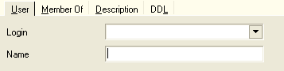
- En la lista desplegable [Inicio de sesión], verás la lista de inicios de sesión existentes. Selecciona el inicio de sesión [admarticles].
- En [Nombre], introduce un nombre de usuario. Se pueden asociar varios usuarios a la misma cuenta de inicio de sesión. Además, en MSDE, para crear un usuario primero es necesario crear una cuenta de inicio de sesión. El panel [Usuario] tiene ahora este aspecto:

- Ahora pasemos al panel [Miembro de], que nos permitirá definir los permisos de nuestro usuario:

- No soy un usuario habitual de MSDE y no estoy seguro del significado exacto de cada uno de los roles que aparecen en el panel izquierdo. El rol [db_owner] resulta tentador (owner = propietario). Por lo tanto, lo seleccionaremos para nuestro usuario [admarticles]:

- Confirmamos nuestras selecciones haciendo clic en el botón [Compilar] situado arriba. Las consultas SQL ejecutadas son las siguientes:

- Las compilamos haciendo clic en [Aceptar]. Ahora tenemos un usuario para la base de datos [dbarticles]:

- Ahora vamos a crear una tabla. Haz clic con el botón derecho en [Tables] y selecciona la opción [New Table]. Se abrirá la ventana de definición de propiedades de la tabla:
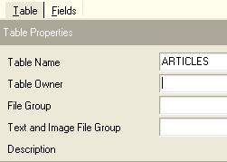
- Empecemos por nombrar la tabla [ARTICLES] utilizando el campo de entrada [Nombre de la tabla]. A continuación, pasa al panel [Campos]:

- define los siguientes campos:

Hasta que no hayamos «compilado» nuestra definición, la tabla no se creará. Utilice el botón [Compilar] situado arriba para finalizar la definición de la tabla. [MS SQL Manager] prepara las consultas SQL para generar la tabla y solicita confirmación:
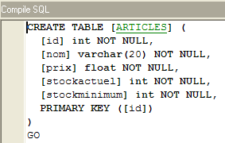
Curiosamente, [MS SQL Manager] muestra las consultas SQL que ha ejecutado. Esto le permite aprender el lenguaje Transact-SQL. El botón [Confirmar] valida la transacción actual, mientras que [Deshacer] la cancela. Aquí, la aceptamos haciendo clic en [Confirmar]. Una vez hecho esto, [MS SQL Manager] añade la tabla creada a nuestro árbol de base de datos:

Al hacer doble clic en la tabla, podemos acceder a sus propiedades:

El panel [Checks] nos permite añadir nuevas restricciones de integridad a la tabla. Para la tabla [ARTICLES], crearemos las siguientes restricciones:
- los campos [ID, PRICE, CURRENTSTOCK, MINIMUMSTOCK] deben ser >=0
- el campo [NAME] no debe estar vacío
En el panel [Comprobaciones], haz clic con el botón derecho del ratón en el área en blanco para añadir una nueva restricción [Nueva comprobación]:

- La hoja de edición de restricciones tiene este aspecto:

Nombre: nombre de la restricción
Tabla: tabla a la que se aplica la restricción
Definición: expresión de la restricción
La restricción se compila utilizando el botón [Compilar] situado arriba.
- Una vez más, [MS SQL Manager] muestra los comandos SQL ejecutados:

- Los validamos mediante el botón [Commit] (no mostrado). Si volvemos al panel [Checks] de la tabla [ARTICLES], aparece la nueva restricción:

- Definimos las demás restricciones de la misma manera para obtener finalmente la siguiente lista:

Una vez hecho esto, abre el panel [DDL] de la tabla [ARTICLES]:

Este panel muestra el código Transact-SQL para crear la tabla con todas sus restricciones. Puede guardar este código en un script para ejecutarlo más tarde:
CREATE TABLE [ARTICLES] (
[id] int NOT NULL,
[nom] varchar(20) COLLATE French_CI_AS NOT NULL,
[prix] float(53) NOT NULL,
[stockactuel] int NOT NULL,
[stockminimum] int NOT NULL,
CONSTRAINT [ARTICLES_uq] UNIQUE ([nom]),
PRIMARY KEY ([id]),
CONSTRAINT [ARTICLES_ck_id] CHECK ([id] > 0),
CONSTRAINT [ARTICLES_ck_nom] CHECK ([nom] <> ''),
CONSTRAINT [ARTICLES_ck_prix] CHECK ([prix] >= 0),
CONSTRAINT [ARTICLES_ck_stockactuel] CHECK ([stockactuel] >= 0),
CONSTRAINT [ARTICLES_ck_stockminimum] CHECK ([stockminimum] >= 0)
)
ON [PRIMARY]
GO
Ahora es el momento de introducir algunos datos en la tabla [ARTICLES]. Para ello, utiliza su panel [Datos]:

El botón [+] añade una fila y el botón [-] elimina una. Los datos se introducen simplemente escribiendo en los campos de entrada de cada fila de la tabla. Una fila se valida utilizando el botón [Publicar edición] situado debajo:

Creemos dos elementos:

[MS SQL Manager] te permite ejecutar consultas SQL a través de la opción [Herramientas/Mostrar editor SQL] o pulsando [F12]. Esto te da acceso a un editor avanzado de consultas SQL donde puedes ejecutar consultas. Las consultas se guardan, por lo que puedes volver a abrir una consulta que ya hayas ejecutado. Aquí tienes un ejemplo:

Ejecute la consulta SQL utilizando el botón [Ejecutar] situado arriba. Obtendrá el siguiente resultado:

Terminaremos aquí nuestras demostraciones. La combinación [MS SQL Manager - MSDE], al igual que la combinación [IBExpert - Firebird], también es excelente para aprender sobre bases de datos.
3.15. Creación de una fuente ODBC [MSDE]
El controlador ODBC para SQL Server suele venir instalado de forma predeterminada en los equipos con Windows.
- Inicie la herramienta [Inicio -> Configuración -> Herramientas de configuración -> Herramientas administrativas -> Orígenes de datos ODBC]:
- Aparecerá la siguiente ventana:
- Haga clic en [Añadir] para añadir un nuevo origen de datos del sistema (en el panel [DSN del sistema]) que asociaremos a la base de datos MSDE que creamos en la sección anterior:

- En primer lugar, debemos especificar el controlador ODBC que se va a utilizar. Arriba, seleccionamos el controlador para [SQL Server] y, a continuación, hacemos clic en [Finalizar]. A continuación, se activa el Asistente para controladores ODBC de [SQL Server]:

- Rellenamos los distintos campos:
el nombre de la fuente ODBC; puede ser cualquiera | |
puede ser cualquier cosa | |
Nombre del servidor MSDE que contiene los datos de origen ODBC |
- Haga clic en [Siguiente] para proporcionar información adicional:

- Rellene los distintos campos:
Especifique que se conectará al origen de datos ODBC utilizando un nombre de usuario registrado en el servidor MSDE | |
Inicio de sesión de usuario | |
Contraseña de usuario |
- Ten en cuenta que esta es la primera vez que utilizamos el usuario (admarticles, mdparticles) creado en una sección anterior. Haz clic en [Siguiente] de nuevo para pasar a la siguiente pantalla:

- Rellenamos los distintos campos:
Seleccionamos la base de datos [dbarticles] como base de datos predeterminada para el usuario [admarticles] |
- Haga clic en [Siguiente] para pasar a la siguiente pantalla:

- Aceptamos los valores predeterminados y hacemos clic en [Finalizar]. Se muestra un resumen de las características de la fuente ODBC que se va a crear:

- El botón [Probar origen de datos] nos permite verificar la validez de nuestra información. Compruebe que MSDE se está ejecutando y, a continuación, pruebe la conexión:
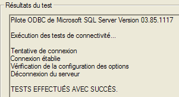
- Ahora tenemos la certeza de que se reconoce el par [admarticles, mdparticles].
Para realizar más pruebas, el lector puede seguir el procedimiento explicado en la sección 3.10.
3.16. Cadena de conexión a una base de datos MSDE
- Inicie Visual Studio y abra el Explorador de servidores [Ver/Explorador de servidores]:
|
- Haga clic con el botón derecho en [Conexión de datos] y seleccione la opción [Añadir conexión]:

- En el panel [Proveedor], especifique que desea utilizar un origen de SQL Server y, a continuación, cambie al panel [Conexión]. Tenga en cuenta que aquí no estamos utilizando un controlador ODBC.

Nombre del servidor MSDE al que te estás conectando | |
Nombre de usuario que se utilizará para conectarse a la base de datos | |
la contraseña asociada a este nombre de usuario | |
La base de datos con la que desea trabajar |
El botón [Probar conexión] te permite verificar la validez de la información:

- Confirme el asistente haciendo clic en [Aceptar]. Curiosamente, una nueva ventana le solicita los datos de conexión:

- introdúzcalos de nuevo y haga clic en [Aceptar]. A continuación, el origen de datos aparecerá en la ventana [Explorador de servidores] de Visual Studio:

- al hacer doble clic en la tabla [ARTICLES], puede acceder a los datos de la tabla:
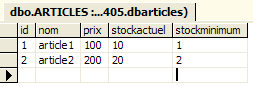
- Si hacemos clic con el botón derecho del ratón en el enlace [portable1_tahe\msde140405.dbarticles.admarticles] en el panel [Explorador de servidores] y seleccionamos la opción [Propiedades], podemos ver las propiedades de la conexión:

- La [Cadena de conexión] es una propiedad importante que hay que conocer, ya que el código .NET la necesita para establecer una conexión con la base de datos. En este caso, la cadena de conexión es:
Provider=SQLOLEDB.1;Persist Security Info=False;User ID=admarticles;Initial Catalog=dbarticles;Data Source=portable1_tahe\msde140405;Use Procedure for Prepare=1;Auto Translate=True;Packet Size=4096;Workstation ID=PORTABLE1_TAHE;Use Encryption for Data=False;Tag with column collation when possible=False
Muchos elementos de esta cadena de conexión tienen valores predeterminados. La siguiente cadena de conexión será suficiente: